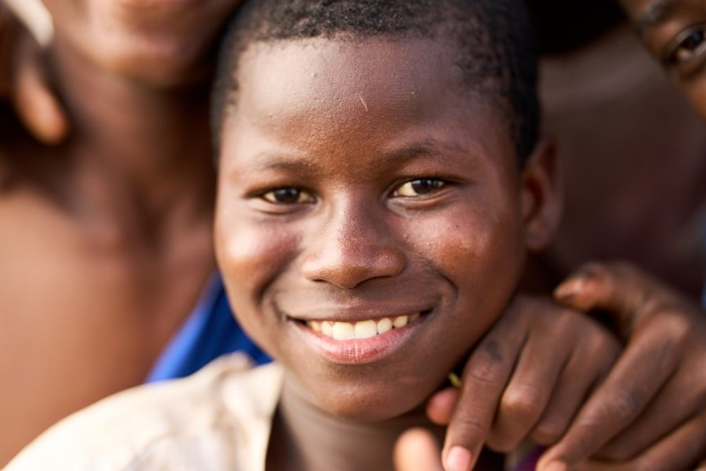
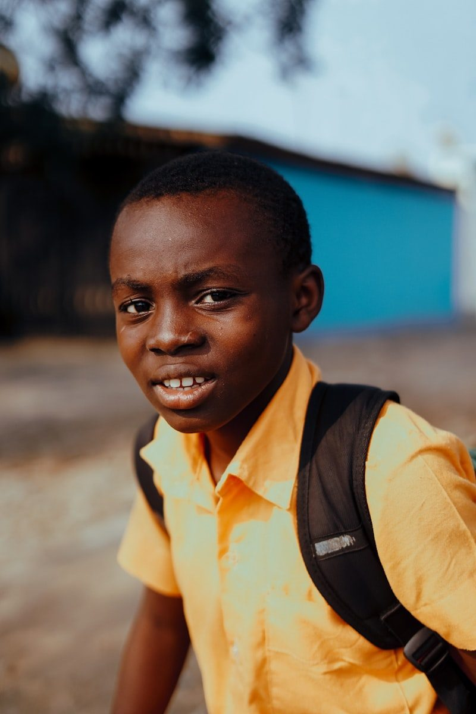
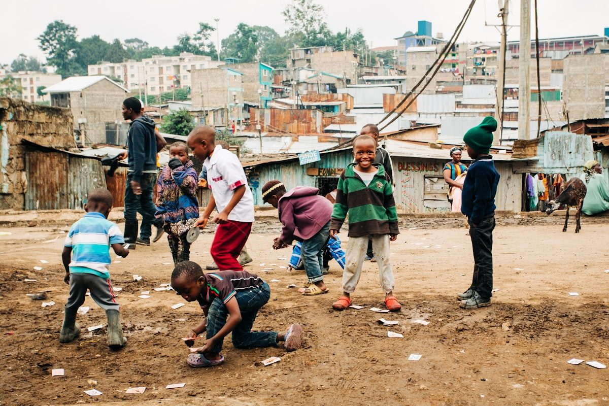
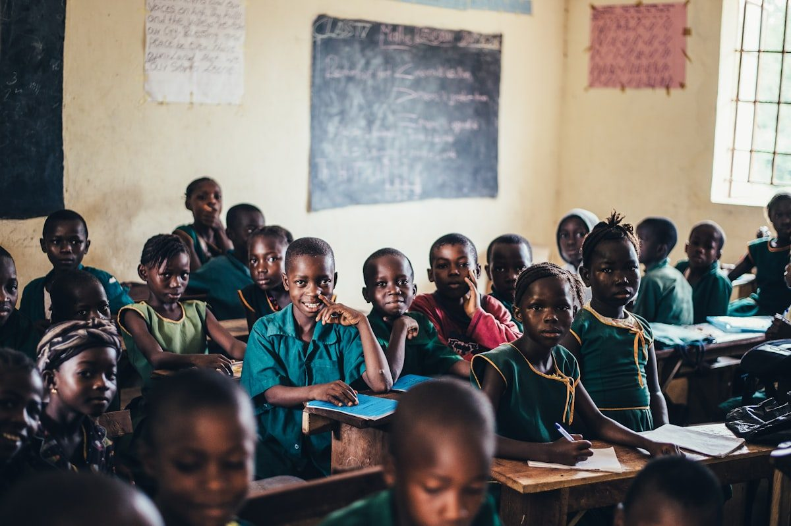
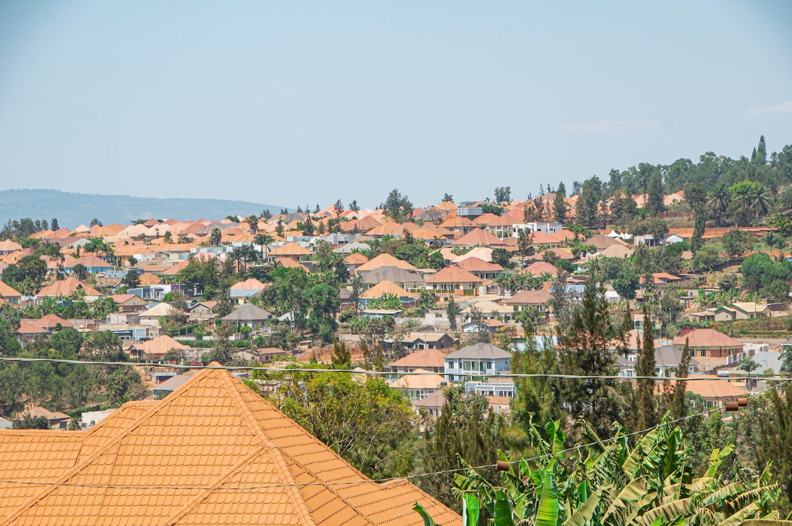

A name that is a promise: Live More. Choose Life.
“Ongera Ubeho” is Kinyarwanda — a direct call to every young Rwandan to take back their future. We are a community-based mentorship hub built by young Rwandans, for Rwandan families.

Families should never face a crisis alone
Ongera Ubeho was founded by University of Rwanda students who saw the same story repeat in their own communities: a teenager starts slipping — into drugs, gambling, or the street — and the family has no one to call. Counselling is unaffordable. Institutions feel distant. Shame keeps the problem hidden until it is too late.
We built the support system we wished existed: trained mentors from the same community, speaking the same language, reachable from the most basic phone — with a physical safe space where trust is rebuilt face to face.
- Mission: reconnect struggling youth with their families and futures through affordable, culturally rooted mentorship.
- Vision: a Rwanda where no young person is lost to the streets because help came too late or cost too much.

Youth are falling through the cracks
Across Rwanda, children and young people are leaving their homes and ending up on the streets — not just because of poverty, but because families have nowhere to turn when the warning signs appear.
Drug & Substance Abuse
Pulling youth away from families and schools into dangerous cycles that are hard to break alone.
Gambling Addiction
Young men aged 15–25 facing financial ruin and family breakdown chasing losses they cannot recover.
Peer Pressure
Negative social influence causing school dropout and antisocial behaviour among vulnerable teens.
Communication Breakdown
Parents and children unable to talk to each other — leaving problems hidden until it is too late.
Street Children
Thousands living under bridges and in markets with no shelter, no food, and no adult guidance.


Designed for Rwanda, by Rwandans
Human Connection First
Built on real relationships, not just screens. Rwandans trust community-based, face-to-face interaction more than apps alone.
Zero Data Needed
USSD/SMS access works on the most basic phones. No smartphone, no internet required — nobody is excluded by poverty or technology.
Kinyarwanda-Native Mentors
All mentors speak Kinyarwanda and come from the very communities they serve. Zero cultural gap. Zero language barrier.
Dual-Track Model
The only initiative in Rwanda linking family-based mentorship with street youth rehabilitation under one umbrella.
Prevention Over Cure
Reaching youth before the crisis becomes irreversible. Early intervention saves lives — and saves money.
Women & Girls Centered
Female mentors recruited and trained; girls receive targeted support. At least 60% of youth beneficiaries are young women.

From one neighbourhood to a national model
We begin where we live: one district, one safe space, ten trained mentors. The model is deliberately simple and low-cost so that any Rwandan district can replicate it — in line with the country's NST2 development strategy and Vision 2050.
Community leaders, schools, and local health workers are part of the design, not an afterthought. That is what makes families trust us with their hardest moments.
See the RoadmapMultidisciplinary. Passionate. Community-rooted.
A team of University of Rwanda students who combine lived experience with academic training — and who stay accountable to the communities they come from.
Project Lead & Community Liaison
Overall strategy, stakeholder engagement, and community partnerships.
Platform & Tech Lead
USSD/WhatsApp system development and the mentor-matching algorithm.
Street Outreach Coordinator
Weekly outreach to street youth, trust-building, and safe space management.
Mentorship & Training Lead
Mentor recruitment, training curriculum, and quality assurance.
M&E and Finance Lead
Impact tracking, budget management, and donor reporting.
70%+ female team members · Aligned with NST2 & Vision 2050
Meet us. Challenge us. Join us.
We are building this in the open — and we would love to tell you more about the model, the evidence, and the communities we serve.
Write to us at mikelgodwin1234@gmail.com — Kigali, Rwanda